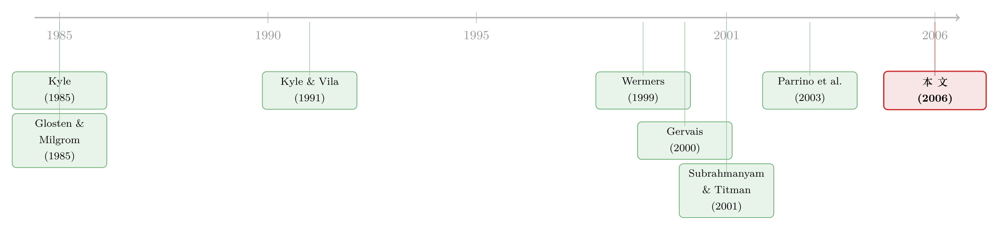

明知要亏，她还是砸了盘——一场被「做局」做出来的股东起义
本文读的是 Attari, Banerjee & Noe (2006, JFE)：一家陷入麻烦的公司，机构投资者一边在亏钱卖出，「关系投资者」却一边在买入。作者用一个两期的策略交易模型说明——机构甘愿承受交易亏损去砸盘 (dumping)，并不是恐慌，而是一次精心的算计：把股价砸下去，逼出第三方的治理介入，从而保住自己手里剩下那批存货的价值。砸盘，是一场被「制造」出来的股东起义。
1 一桩说不通的卖单
先说一个在「问题公司」身上反复出现、却始终没被讲圆的现象。
当一家公司开始出毛病——业绩滑坡、管理层被质疑——你会在它的交易簿里同时看到两种相反的动作：一类大机构在不停地抛，哪怕账面上明显是在亏钱卖；与此同时，另一类被称作「关系投资者 (relationship investor)」的玩家却在默默吸筹，准备进场折腾管理层。这一卖一买的对峙，是 Parrino、Sias 和 Starks (2003) 那篇研究机构「用脚投票」、把 CEO 投下台的论文里反复出现的画面（关于机构如何用持仓变动逼宫，可参见《用脚投票：被炒掉的 CEO 背后，是谁先悄悄离场》）。
问题在哪？
标准的知情交易理论会告诉你一句几乎是常识的话：好消息就买，坏消息就卖，没消息就别动。 一个手里没有任何私密信息的机构，理性的做法是按兵不动——因为任何主动下单都会被做市商当成「有人知道了什么」，从而吃亏在买卖价差上。可现实里，我们偏偏看到大量没有信息优势的机构，也在跟着往下砸。
这就是本文要解开的张力：一个明知道自己什么都不知道、明知道卖出会亏钱的机构，为什么还是要砸盘？
接着，一个自然的问题是：如果这不是恐慌，也不是知情，那它图什么？Attari、Banerjee 和 Noe 给出的答案，藏在「她手里还剩多少股」这件事里。
2 一个最精简的舞台
要把这件事讲透，作者搭了一个尽可能干净的两期、三日 (t=1,2,3) 经济。
舞台上有两类策略玩家。一类是机构投资者 (institutional investor, I)：她持有一笔非负的存货 N_I，能在第 1、2 两期交易，但没有能力亲自去干预公司经营。另一类是关系投资者 (relationship investor, R)：他第 2 期才进场，手里也有一笔存货 N_R，但他有一项 I 没有的本事——行动主义 (activism)，即亲自下场改造管理层。
公司在第 3 期付一笔清算股利，每股值 1.0 或 0.0。世界有两种状态，事前各占一半：
- 好 (Good)：无论
R是否出手，每股都值1.0； - 坏 (Bad)：默认每股值
0.0，但只要R出手干预，就回到1.0。
这里藏着全文的灵魂设定：行动主义与管理质量是完美替代品。坏管理层造成的窟窿，恰好能被 R 的介入补上;而且 R 出手要自掏一笔成本 f \geq 0。换句话说，R 的边际贡献在管理层越差时越大——这一点后面会反复用到。
信息结构是这样的：第 1 期开始前，机构 I 私下收到三种信号之一——H（完美预示好状态）、L（完美预示坏状态）、U（完全没信息）。她拿到有信息信号的先验概率是 t_0，两个有信息信号等可能。而她到底是真知情，还是只是在按市场先验瞎蒙，这本身也是她的私人信息——这是本文区别于经典模型的一处关键，下文再表。
交易环境沿用 Glosten 和 Milgrom (1985) 的味道：一个风险中性的做市商逐笔观察订单（因此能看见成交量，而不只是净订单流），看完之后定价。流动性交易者每期等概率提交 -1, 0, +1 一股的单子;策略玩家若要下单，为了藏进流动性单子的「一股」节奏里，也只提交一股的买 (+1) 或卖 (-1)。
第 1 期价格只是订单流的函数；第 2 期价格则同时取决于第 1、2 两期的订单流。机制就这么简单，可正是它，长出了「砸盘」这朵反常的花。
3 三个激励：把一笔卖单拆开看
本文最漂亮的地方，是把机构 I 的每一笔第 1 期交易拆成了三种同时起作用的力。理解了这三种力的拉锯，就理解了整篇论文。
第一种：交易利润 (trading profit)。 这是最朴素的一种。有好信息就买、有坏信息就卖，赚做市商定价滞后的钱。单看这一项，没信息的 I 应该待在场边不动。
第二种：价值守恒 (value conservation)。 这是全文的发动机。机构手里还压着 N_I 股存货。她在第 1 期卖出，会把价格砸低；低价被 R 看在眼里，R 据此推断「管理层多半很差」，于是更可能出手行动主义；而 R 一旦出手，坏公司也能值回 1.0——于是她手里剩下那批存货的内在价值反而被托了起来。卖一股的小亏，可能换来一整仓存货的升值。
第三种：信念操纵 (belief manipulation)。 机构知道一件做市商不知道的事——她自己这笔单子到底含不含真信息。理性预期只保证「平均而言」做市商的判断无偏；但对某一笔具体订单，做市商可能判错。比如 I 在无信息时卖出，做市商会把价格压低，可 I 心里清楚自己根本没收到坏消息——于是第 2 期她有动机反手买回这只被自己「错杀」的股票。
把这三种力放在一起，整个均衡的形状就出来了。
4 核心一步：价值守恒如何逼出砸盘
现在我们把发动机的内部结构拧开看。
先写下关系投资者出手的概率。令 x(o_1) 表示在第 1 期订单流 o_1 之下，R 选择行动主义的概率：
$$x(o_1)=\Pr\!\big(i_R(o_1)=A \mid o_1\big).$$
R 是看完第 1 期订单流之后才决定要不要出手的，所以他的行动概率是订单流的函数——这正是机构能用交易去「撩拨」他的通道。
接着，把每股价值按机构信号拆开（论文式 (12)）：
$$ E[V\mid s,o_1]= \begin{cases} 1.0 & \text{if } s=H,\\[4pt] \tfrac{1}{2}\big(1+x(o_1)\big) & \text{if } s=U,\\[4pt] x(o_1) & \text{if } s=L. \end{cases} $$
真正关键的一步，是看无信息那一行 s=U。把它单独拎出来标注清楚：
这条式子把整个故事压成了一行：一个无信息机构，手里每股的内在价值，是 x(o_1) 的增函数。 x 越大，她的存货越值钱。
那么 x 怎么变大？答案是：卖。她在第 1 期砸盘，价格走低，R 推断坏管理的概率上升，于是 R 出手的概率 x 上升。于是反转出现了——砸盘在亏掉一点交易钱的同时，抬升了她剩余 N_I 股存货的价值。 只要存货 N_I 够大，价值守恒的收益就压过交易的亏损，无信息的她会主动去砸盘。
而做市商这边定的价（论文式 (10)）也把这层逻辑写了进去：
$$P_1(o_1)=x(o_1)+\big(1-x(o_1)\big)\Big[\Pr(H\mid o_1)+\tfrac{1}{2}\Pr(U\mid o_1)\Big].$$
做市商分不清「知情的卖」和「无信息的砸」，于是连无信息的卖单也会把价格压低——这恰恰是机构想要的：用一笔做市商无法识别的卖单，去给 R 发一个「管理层有问题」的信号。
于是，砸盘均衡 (dumping equilibrium) 出现了：机构在第 1 期，无论拿到坏信号 L，还是干脆无信息 U，都站在卖方。这就长出了羊群 (herding)——而且是只在卖方、不在买方的羊群。
这里有两个反直觉、却极其重要的推论。
其一，羊群只偏在卖侧。 机构在坏消息和无消息时一起卖，却不会在好消息和无消息时一起买。这个不对称羊群预测，和 Wermers (1999) 发现的共同基金羊群证据大体吻合，却和「纯粹出于声誉保护的劳动力市场羊群理论」相冲突（关于机构羊群究竟是真跟风还是统计假象，可参见《羊群是真的吗？——把「机构跟风」拆成跟自己和跟别人》）。
其二，信息越差，交易反而越多。 机构信号的事前精度 t_0 一旦下降，砸盘的交易亏损也随之变小（因为坏信号本就没那么「准」，市场的折价就没那么狠），于是无信息的机构更愿意去砸。这和标准微观结构模型的结论正好拧着来：在那些模型里，信息质量下降会让交易萎缩;而这里，事前信息质量的下降，反而能放大交易活动。
5 砸完之后：是「砸了再拉」，还是按兵不动
故事到这里还差半场。砸盘是第 1 期的事;第 2 期，那个无信息却已经卖出的机构，该怎么办？
这就轮到第三种力——信念操纵——登场。她心里清楚自己第 1 期那笔卖单是「空的」，价格被错杀了，所以她有动机第 2 期买回，吃下这段「砸盘再拉抬 (dump and pump)」的价差。
但真正关键的一步在于：她能不能顺利买回，取决于第 2 期市场结构里一处很微妙的细节——关系投资者的随机化。
作者证明：除非 R 的持仓极大，否则 R 只能靠一种随机行动主义策略才有利可图——出手干预时买入，不干预时卖出。可一旦 R 这样随机地把「行动」和「交易」绑在一起，他自己的买单就外生地携带了关于他要不要出手的私密信息。这反过来给那个想买回的无信息机构制造了逆向选择损失。
于是出现了一个分岔：
- 当行动主义概率高时，买单含金量高，会引发很大的向上报价修正——这时砸过盘的无信息机构在第 2 期会选择按兵不动 (hold)，因为买回太贵；
- 当行动主义概率低时，买单不会引发那么大的上修——这时她可以有利可图地买回，「砸盘再拉抬」的均衡才成立。
值得一提的还有场边的那种情形：当行动主义几乎不可能发生时，价值守恒这台发动机熄火，只剩交易利润在起作用。此时无论是「先拉后砸 (pump and dump)」还是「先砸后拉 (dump and pump)」，第 2 期的操纵收益都填不平第 1 期的操纵亏损——于是无信息的机构干脆退回场边，什么都不做。这恰好回收了开头那个谜题：场边不动，只是均衡的一种;一旦关系投资者的存在感足够强，砸盘才被逼了出来。
6 它到底预言了什么
这套机构与关系投资者互相博弈的框架，吐出了一串可供实证检验的预测：
- 机构卖出之后，管理层换血、治理变动的概率更高；
- 机构羊群会集中在卖方，而非买方；
- 管理层换血不只与股价下跌相关，还与成交量相关——这正是作者坚持用 Glosten–Milgrom 式、能观测成交量的设定，而非纯 Kyle 设定的理由；
- 机构砸盘对价格的冲击，取决于该机构交易前的持仓规模
N_I； - 机构订单流会呈现不对称的时间序列相关性：买单跟着买单出现的概率，高于卖单跟着卖单出现的概率。
最后这一条尤其漂亮——它把抽象的「信念操纵」翻译成了一个可以拿订单流数据去查的、关于自相关方向性的具体断言。
文献脉络
把这篇论文摆进它的家谱，其实有点为难——因为它是个混血儿。
往上数，它一条根扎在经典微观结构里：Kyle (1985) 与 Glosten 和 Milgrom (1985) 奠定了知情交易的两套语法。本文大体沿用了知情交易的标准骨架，但有一处偏离——知情者对自己信号的精度也拥有私人信息。在这一点上，它跟着 Gervais (2000) 走，并且出于和 Gervais 完全相同的技术原因，选了 Glosten–Milgrom 而非 Kyle 的订单流框架：当交易者掌握「自己信息有多准」的信息时，总需求量不再是订单流信息的充分统计量。

它的另一条根，扎在行动主义交易的文献里。早期如 Kyle 和 Vila (1991)、Bagnoli 和 Lipman (1996)，行动主义交易是敌意收购的前奏——交易是为了夺取正式控制权。本文的分野更深：它盯的是不夺权、只改政策的少数股东行动主义;而且在它的设定里，不创造价值的机构先行动，去左右那个能创造价值的关系投资者的预期——焦点是两类大型策略投资者之间的互动。
第三条根，是信息交易对公司决策的反馈效应：Subrahmanyam 和 Titman (2001)、Khanna 和 Sonti (2004)、Boot 和 Thakor (1993) 一脉，讲的是管理层如何从订单流里读出投资决策所需的信息（关于公司是否真的「看着股价做投资」，可参见《老板到底有没有在「看股价」做投资？》）。本文的不同在于：互动不发生在「知情交易者 vs 不交易的经理」之间，而发生在两类大型策略交易者之间;而且在那些反馈模型里，新项目投资与公司质量正相关，本文里的行动主义投资却与质量负相关——于是它凸显的是反转策略（砸盘再拉抬），而非那些工作里强调的延续策略（动量）。和它最近的近邻 Goldstein 和 Guembel (2002)——一个做空者发假信号去误导投资决策——则只刻画了单一类型交易者，且做空者发的是压低而非抬升价值的信号（关于把私密信号「用两次」的操纵，可参见《传谣时买，出新闻时卖：一个把私密信号「用两次」的内幕交易者》）。
评论与延伸（Q&A + 研究方向）
（a）几个可能的疑问
Q：「砸盘」和教科书里的「知情抛售」到底差在哪？
差在动机。知情抛售是因为真收到了坏消息，卖是为了赚交易利润。砸盘是无信息时也卖，卖不是为了交易利润（那一笔反而亏），而是为了价值守恒——用一笔做市商无法识别的卖单去触发第三方治理介入，抬升手里剩余存货的价值。前者的卖单含真信息，后者的卖单是「空的」。
Q：机构甘愿亏钱去砸盘，这个亏损会不会大到让整件事不成立？
关键看持仓
N_I。砸盘的交易亏损是「一股」量级的，而价值守恒的收益作用在整仓N_I股上。只要持仓足够大、且关系投资者的行动概率对价格足够敏感，整仓升值就能盖过单笔亏损。这也正是论文那条预测——价格冲击取决于机构交易前持仓规模——的来处。
Q：为什么羊群只出现在卖方，不出现在买方？
因为价值守恒的激励是单向的。砸盘能触发行动主义、托起存货价值;而买入抬价只会让关系投资者觉得「管理层没问题」，反而抑制了能救坏公司的那次介入。所以无信息机构有动机跟着卖、却没动机跟着买。这正是它与「声誉保护型羊群」的可证伪分歧：后者预测买卖两侧对称跟风。
Q：「信息越差、交易越多」这个反直觉结论，会不会只是模型的人为产物？
它确实是这个机制的内生结果，而非假设硬塞。逻辑链是：事前精度
t_0下降 → 坏信号本就不那么「准」→ 市场对卖单的折价变小 → 砸盘的交易亏损变小 → 无信息机构更敢砸。它之所以和标准模型拧着来，正是因为标准模型里没有「价值守恒」这第二种激励。是不是人为产物，得靠那串订单流预测去实证检验。
Q：关系投资者为什么非要「随机」地行动？直接出手不好吗？
因为若总是「干预就买、买就被认出来」，他的买单会瞬间把价格顶上去，自己反而买在高位、无利可图（除非持仓极大）。随机化是他在第 2 期保住交易利润的唯一办法。但随机化有个副作用：他的订单外生地泄露了自己要不要出手的私密信息，从而给想买回的机构制造逆向选择——这恰恰决定了「砸盘再拉抬」能不能成立。
Q：这套理论能直接拿去解释现实里的机构抛售吗？
谨慎一点说：它给出的是可检验的方向性预测（卖方羊群、量价同时预测换帅、买买相关强于卖卖相关），而不是一个已被数据确认的结论。论文本身是纯理论。把它当成一张「该去数据里找什么」的清单，比当成「现实就是如此」的断言更稳妥。
（b）几个可能的研究问题与提案
1. 把「砸盘触发治理」搬到公司债 / 信用市场。
【经济故事】债券持有人同样面临「自己不能直接经营、却希望第三方（如对冲基金、不良债权投资者）介入重整」的局面。一个大持有人在二级市场抛债、压低价格，是否在向潜在的「关系型」债权人发信号、撬动一次债务重组或控制权争夺？信用市场里「价值守恒」的对象，是该持有人手里剩余的同发行人债券。 【可行性】中。需要 TRACE 级别的逐笔成交数据 + 重组/违约事件库。识别上的难点是把「砸盘做局」与「真实的基本面恶化抛售」分开——可借本文那条预测：用同一持有人的剩余持仓规模做横截面切割，看价格冲击是否随持仓上升。
2. 外资持有人是不是更难、还是更容易玩「砸盘」这一手？
【经济故事】外资机构往往持仓集中、却又缺乏本地行动主义能力——这恰好是本文「机构
I」的画像：能砸盘、不能亲自介入。那么外资是否更依赖「砸盘撬动本地关系投资者」这条通道？反过来，本地行动主义者的稀缺会不会让这条通道在某些市场根本失效？ 【可行性】中。需要跨国机构持仓（如 FactSet/13F 类数据）+ 本地治理介入事件。识别可用各国「行动主义可行性」的制度差异（股东权利、维权基金活跃度）作横截面比较，检验外资砸盘→治理变动的链条强弱是否随之变化。
3. 用订单流自相关的不对称性做一次直接检验。
【经济故事】本文最干净的可证伪预测是：买跟买的概率 > 卖跟卖的概率。这是「信念操纵 + 砸盘再拉抬」留下的指纹，且应在困境公司附近最明显。 【可行性】高。这是纯数据题：取逐笔订单流，估计买/卖订单的条件转移概率，按公司困境程度（评级下调、业绩预警）分组比较。所需数据成熟、识别策略直接，是几条预测里最 doable 的一个。
4. 砸盘做局对流动性的真实代价。
【经济故事】如果一部分卖单是「空的」（无信息砸盘），做市商无法识别，就会对所有卖单加宽价差——这意味着砸盘的存在会系统性地恶化困境公司的卖侧流动性。这把「治理」与「流动性」连在了一起。 【可行性】中。需要识别「疑似砸盘」时段（大持有人 + 随后出现治理事件），比较其卖侧价差/深度相对买侧的恶化幅度。难点同样是把做局性抛售从恐慌性抛售里剥出来，仍可借持仓规模这把尺子。
我的判断
这篇论文的贡献，是把三种平时被分开研究的力——交易利润、价值守恒、信念操纵——装进了同一个两期均衡，并由此内生地长出了「亏钱砸盘」这朵反常的花。它最有价值的不是某个数字，而是那条因果链的方向性：砸盘不是恐慌，而是给第三方治理介入下的一道战术指令;以及由此推出的、与标准微观结构相悖的两条预测——卖侧不对称羊群、信息越差交易越多。
对它的担忧，主要在两处。其一，是机制的脆弱性：整个故事高度依赖「行动主义与管理质量完美替代」「关系投资者随机行动」等几条相当强的假设，一旦替代性不完美，机构就没有理由偏离标准的「买低卖高」——作者自己也坦承了这一点。其二，是实证落地的距离：论文给出的是一串预测，却没有数据;而这些预测里最要命的识别难题——如何把「做局性砸盘」与「真实基本面抛售」分开——恰恰被留给了后人。
我接下来最想看到的，是有人拿这条「买买相关强于卖卖相关」的订单流指纹，去困境公司样本里做一次干净的检验;以及把这套逻辑搬到公司债与外资持有人的场景里——那里持仓更集中、行动主义更稀缺，「砸盘撬动治理」这条暗线，或许比在股票市场更清晰，也更值得一量。
参考文献
Bagnoli, M., Lipman, B. L. (1996). Stock price manipulation through takeover bids. Rand Journal of Economics.
Boot, A., Thakor, A. (1993). Security design. Journal of Finance 48, 1349–1378.
Gervais, S. (2000). Market microstructure with uncertain information precision: A multi-period analysis. Working paper, Wharton School, University of Pennsylvania.
Glosten, L., Milgrom, P. (1985). Bid, ask and transaction prices in a specialist market with heterogeneously informed traders. Journal of Financial Economics 14, 71–100.
Goldstein, I., Guembel, A. (2002). Manipulation, the allocational role of prices and production externalities. Working paper (AFA 2003 / EFA 2002).
Khanna, N., Sonti, R. (2004). Value creating stock manipulation: Feedback effect of stock prices on firm value. Journal of Financial Markets 7, 237–270.
Kyle, A. S. (1985). Continuous auctions and insider trading. Econometrica 53, 1315–1336.
Kyle, A. S., Vila, J.-L. (1991). Noise trading and takeovers. Rand Journal of Economics 22, 54–71.
Parrino, R., Sias, R., Starks, L. (2003). Voting with their feet: Institutional investors and CEO turnover. Journal of Financial Economics 68, 3–46.
Subrahmanyam, A., Titman, S. (2001). Feedback from stock prices to cash flows. Journal of Finance 56, 2389–2413.
Wermers, R. (1999). Mutual fund herding and the impact on stock prices. Journal of Finance 54, 581–622.